리눅스마스터-2급 (2018-09-08 기출문제)
1과목: 리눅스 운영 및 관리
1. 다음 ( 괄호 ) 안에 들어갈 명령으로 알맞은 것은?
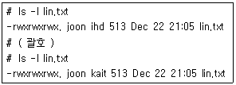
- chown :ihd lin.txt
- chown :kait lin.txt
- chgrp ihd lin.txt
- chgrp :kait lin.txt
(정답률: 60%)

2. 다음 중 저널링 파일 시스템을 생성하는 명령으로 틀린 것은?
- mke2fs /dev/sdb1
- mkfs -t ext3 /dev/sdb1
- mke2fs -j /dev/sdb1
- mke2fs -t ext4 /dev/sdb1
(정답률: 62%)
3. 다음 ( 괄호 ) 안에 들어갈 허가권 값으로 알맞은 것은?
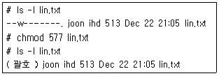
- -rwxrwxrwx.
- -r-xrwxrwx.
- -rwxrwxr-x.
- -rwxrwxrw-.
(정답률: 86%)
4. 다음 중 스티키 비트(Sticky Bit)에 대한 설정하는 방법으로 알맞은 것은?
- chmod o+s data/
- chmod o+t data/
- chmod u+s data/
- chmod u+t data/
(정답률: 76%)
5. 다음 중 파일에 부여되는 허가권인 w에 대한 설명으로 틀린 것은?
- 파일을 삭제할 수 있다.
- 파일의 내용을 수정할 수 있다.
- 파일의 내용을 전부 지워서 빈 파일을 만들 수 있다.
- cat 명령과 >>를 이용해서 파일의 내용을 추가할 수 있다.
(정답률: 69%)
6. fdisk 명령을 실행하면 파티션의 속성(Id)을 확인할 수 있다. 다음 중 스왑(swap)에 해당하는 속성값으로 알맞은 것은?
- 82
- 83
- 8e
- fd
(정답률: 54%)
7. 다음 중 /etc/fstab의 첫 번째 필드 형식으로 틀린 것은?
- /
- /dev/sdb1
- LABEL=/home
- UUID=cb929e4a-f1ac-4087-b86b-90338f9bc745
(정답률: 54%)
8. 다음에 대한 설명으로 틀린 것은?
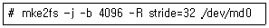
- /dev/md0는 Raid 장치이다.
- 블록 사이즈는 4096바이트로 설정한다.
- stripe당 블록 사이즈는 32바이트로 설정한다.
- /dev/md0를 ext2 파일 시스템으로 생성한다.
(정답률: 81%)
9. 다음 중 /home 영역에 설정된 사용자 쿼터 정보를 출력하는 명령으로 알맞은 것은?
- quota /home
- repquota /home
- edquota /home
- quotacheck /home
(정답률: 44%)
10. 다음 중 DVD 등 이동식 보조기억장치의 미디어를 꺼낼 때 사용하는 명령으로 알맞은 것은?
- fdisk
- mkfs
- eject
- unmount
(정답률: 80%)
11. ihd 사용자가 셸 프롬프트를 다음과 같이 변경 하려할 때 알맞은 것은?
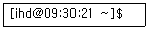
- PS1=“[\u@\t \W]\$ ”
- PS1=“[\u@\d \W]\$ ”
- PS2=“[\h@\t \W]\$ ”
- PS2=“[\h@\d \W]\$ ”
(정답률: 69%)
12. 다음 중 현재 접속되어 있는 셸(Shell)을 확인하는 명령으로 알맞은 것은?
- chsh –l
- echo $PS1
- echo $SHELL
- cat /etc/shells
(정답률: 74%)
13. 다음 중 셸 환경 변수를 선언 하는 방법이 틀린 것은?
- PATH=$PATH:$HOME/bin
- PS1='[\u@\h \w]\$ '
- TMOUT=/bin/logout
- TERM=xterm
(정답률: 56%)
14. 다음 중 조건에 맞는 명령어 형식으로 알맞은 것은?
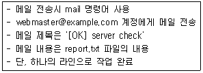
- mail -s "[OK] server check"
webmaster@example.com < report.txt - mail -s "[OK] server check"
webmaster@example.com > report.txt - mail -s "[OK] server check"
webmaster@example.com << report.txt - mail -s "[OK] server check"
webmaster@example.com >> report.txt
(정답률: 55%)
15. 다음 중 배쉬셸 명령행 편집 기능에 대한 명령과 설명이 틀린 것은?
- [Ctrl + b] : 커서를 왼쪽으로 한 칸 이동
- [Ctrl + f] : 커서를 오른쪽으로 한칸 이동
- [Ctrl + a] : 맨 왼쪽으로 이동
- [Ctrl + d] : 맨 오른쪽으로 이동
(정답률: 50%)
16. 다음 중 본 셸(sh)에 대한 설명으로 틀린 것은?
- AT&T 벨 연구소의 스티븐 본(Stephen Bourne)이 개발하였다.
- 1977년에 처음으로 유닉스 버전 7에 포함되었다.
- 조건구문(if), 반복구문(while)이 존재하지 않는다.
- 별칭(alias)이 존재하지 않는다.
(정답률: 57%)
17. 다음 중 ( 괄호 ) 안에 들어갈 명령어로 알맞은 것은?
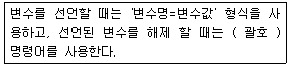
- unset
- remove
- erase
- delete
(정답률: 73%)
18. 다음 중 배쉬셸(bash)의 특성으로 틀린 것은?
- 브라이언 폭스가 GNU 프로젝트를 위해 개발
- 리눅스 운영체제에서만 사용 가능
- 명령어 완성 기능, 명령어 치환 기능 지원
- POSIX와도 호환
(정답률: 68%)
19. 다음중 프로세스우선순위에관한 설명으로틀린것은?
- 'ps –l' 명령으로 PRI와 NI를 확인할 수 있다.
- PRI는 운영체제에서 참고하는 우선순위 값으로 범위는 –20부터 19까지이다.
- NI는 root나 사용자가 조작하는 우선순위 값으로 낮은 값일수록 우선순위가 높다.
- NI값을 설정하면 리눅스는 상황에 따라 PRI값을 적절히 변경하여 우선순위를 조정한다.
(정답률: 47%)
20. top 명령은 실행 상태에서 다양한 명령을 입력하여 프로세스 상태를 출력하거나 제어할 수 있다. 다음 중 관련 설명으로 틀린 것은?
- k 는 PID값을 입력하여 종료신호를 보낸다.
- p 는 프로세스와 CPU항목을 on/off 한다.
- m 은 메모리 관련 항목을 on/off 한다.
- W 는 바꾼 설정을 저장한다.
(정답률: 59%)
21. 다음 중 포어그라운드(foreground) 프로세스를 백그라운드(background) 프로세스로 전환하기 위해 작업중인 프로세스를 대기(suspend)상태로 전환하는 키 조합으로 알맞은 것은?
- [Ctrl] + [z]
- [Ctrl] + [x]
- [Ctrl] + [c]
- [Ctrl] + [b]
(정답률: 78%)
22. 프로세스에 관한 설명으로 알맞은 것은?
- 포어그라운드 프로세스로 실행하기 위해 실행 명령 뒤에 '&'를 붙인다.
- 보통 셸에서 명령을 실행하면 백그라운드 프로세스로 진행된다.
- 백그라운드 프로세스로 명령을 실행하면 작업번호와 PID를 반환한다.
- 한번 사용자가 실행한 프로세스는 중간에 중지시킬 수 없다.
(정답률: 59%)
23. 다음 중 시그널과 관련된 키보드입력에 대한 종류가 틀린 것은?
- SIGKILL : <CTRL + U>
- SIGINT : <CTRL + C>
- SIGQUIT : <CTRL + \>
- SIGTSTP : <CTRL + Z>
(정답률: 66%)
24. 다음 그림에서 PID가 9473인 프로세스의 NI값을 –10으로 변경하기 위한 명령으로 알맞은 것은?
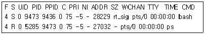
- nice --10 9473
- nice --5 bash
- renice –10 9473
- renice –5 bash
(정답률: 73%)
25. 다음 설명에 가장 알맞은 것은?
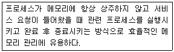
- fork
- exec
- inetd
- standalone
(정답률: 68%)
26. 프로세스의 상태를 출력해주는 명령어가 아닌 것은?
- ps
- pstree
- kill
- top
(정답률: 71%)
27. 다음 프로세스 호출방식으로 알맞은 것은?
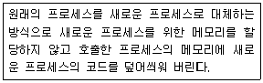
- exec
- fork
- inetd
- bg
(정답률: 74%)
28. 다음 중 프로세스 유틸리티(Utility) 사용법과 설명으로 틀린 것은?
- kill -l : 시그널의 종류를 출력
- killall -9 1234 : PID가 1234인 프로세스에게 9번 시그널을 보냄
- kill -HUP 1234 : PID가 1234인 프로세스에게 1번 시그널을 보냄
- kill 1234 : PID가 1234인 프로세스에게 15번 시그널을 보냄
(정답률: 57%)
29. 다음 중 vi 편집기를 이용하여 현재 커서의 위치부터 문서 끝까지 ihd라는 문자열은 kait로 치환하는 방법으로 알맞은 것은?
- :% s/ihd/kait/g
- :0,$ s/ihd/kait/g
- :.,$ s/ihd/kait/g
- :1,$ s/ihd/kait/g
(정답률: 61%)
30. vi 에디터를 이용해 readme.txt 파일을 열면서 커서를 마지막 줄에 둘 때 사용하는 명령으로 알맞은 것은?
- vi -R readme.txt
- vi + readme.txt
- vi -r readme.txt
- vi -c readme.txt
(정답률: 65%)
31. 다음 중 vi 편집기를 사용해서 입력모드로 전환했을 때 화면 아래에 표시되는 내용으로 알맞은 것은?
- -- IN --
- -- INPUT --
- -- INSERT --
- -- MODE --
(정답률: 76%)
32. 다음 중 vi 편집기에서 입력모드 전환과 관련된 명령으로 가장 거리가 먼 것은?
- i
- o
- p
- s
(정답률: 65%)
33. 다음 중 vi 편집기에서 커서를 왼쪽으로 이동하는 명령키로 알맞은 것은?
- h
- j
- k
- l
(정답률: 56%)
34. 다음에서 설명하는 에디터의 종류로 알맞은 것은?
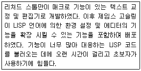
- vi
- vim
- pico
- emacs
(정답률: 78%)
35. 다음 중 수세(SUSE) 리눅스에서 사용하는 저장소 (repository) 기반의 패키지 관리 프로그램으로 알맞은 것은?
- yum
- apt-get
- YaST
- Zypper
(정답률: 58%)
36. 다음 ( 괄호 ) 안에 들어갈 내용으로 알맞은 것은?
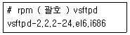
- -v
- -V
- -q
- --version
(정답률: 32%)
37. 다음은 기존의 tar 파일에 추가로 파일을 묶는 과정이다. ( 괄호) 안에들어갈내용으로알맞은것은?
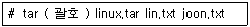
- cvf
- rvf
- tvf
- xvf
(정답률: 51%)
38. 다음 ( 괄호 ) 안에 들어갈 내용으로 알맞은 것은?
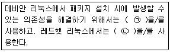
- ㉠ yum ㉡ yum
- ㉠ yum ㉡ aptitude
- ㉠ apt-get ㉡ yast
- ㉠ apt-get ㉡ yum
(정답률: 81%)
39. 특정 패키지가 설치한 파일 목록을 확인하려고 한다. ( 괄호 ) 안에 들어갈 내용으로 알맞은 것은?
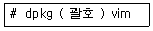
- -ql
- -l
- -L
- -R
(정답률: 36%)
40. 다음 설명에 해당하는 압축 기법으로 알맞은 것은?
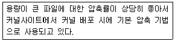
- xz
- gzip
- bzip2
- compress
(정답률: 68%)
41. 다음 조건과 같을 때 ( 괄호 ) 안에 들어갈 내용으로 알맞은 것은?
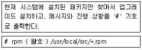
- -ivh
- -uvh
- -Uvh
- -Fvh
(정답률: 45%)
42. rpm 명령의 결과가 다음 그림과 같을 때 ( 괄호 )안에 들어갈 내용으로 알맞은 것은?
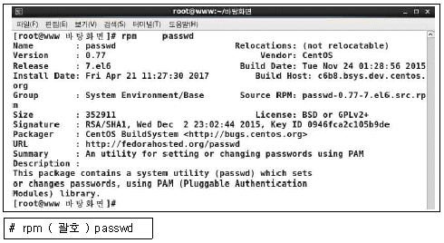
- -qi
- -qd
- -ql
- -qa
(정답률: 53%)
43. lp 명령어로 파일을 여러 장 출력하고자 할 때 사용하는 옵션으로 알맞은 것은?
- -d
- -p
- -#
- -n
(정답률: 57%)
44. 다음 중 ALSA 사운드카드 장치를 초기화 하는 명령으로 알맞은 것은?
- alsactl reload
- alsactl init
- alsamixer reload
- alsamixer init
(정답률: 59%)
45. 다음 중 cancel 명령어로 프린트 작업을 취소할 때 알맞은 것은?
- 먼저 lpc 명령어로 프린트 작업을 가능하게 한다.
- 먼저 lpstat 명령어로 큐의 요청ID를 확인해야 한다.
- lpr 명령어로 출력 결과를 자세하게 출력해야 한다.
- lp 명령어로 프린터 큐에 있는 모든 작업을 취소해야 한다.
(정답률: 62%)
46. 다음중 BSD계열프린터명령어로 알맞게 짝지은것은?
- lpr – lpq - lprm
- lpr – lpc - lpstat
- lp – lpc - lpstat
- lp – lpq - lprm
(정답률: 68%)
47. 다음 중 사운드 카드와 관련이 없는 것은?
- ALSA
- OSS
- SANE
- OSS/free
(정답률: 79%)
48. 다음 ( 괄호 ) 안에 들어갈 내용으로 알맞은 것은?
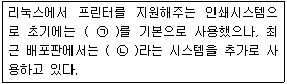
- ㉠ DAEMON ㉡ SMB
- ㉠ LPRng ㉡ CUPS
- ㉠ SANE ㉡ XSANE
- ㉠ ALSA ㉡ OSS
(정답률: 73%)
2과목: 리눅스 활용
49. 다음 설명으로 알맞은 것은?(오류 신고가 접수된 문제입니다. 반드시 정답과 해설을 확인하시기 바랍니다.)
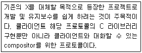
- X.org
- XFree86
- Wayland
- Athena
(정답률: 39%)
50. 다음 중 GUI 환경을 이용하기 위해 사용자에게 제공되는 인터페이스 스타일에 해당하는 명칭으로 알맞은 것은?
- 데스크톱 환경
- X 프로토콜
- 디스플레이 매니저
- 디스플레이 서버
(정답률: 53%)
51. 콘솔 모드에서 두 번째 X 윈도를 실행시키려고 한다. 다음 ( 괄호 )안에 들어갈 내용으로 알맞은 것은?
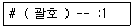
- startx
- XClients
- Xresources
- Xmodmap
(정답률: 75%)
52. 다음 그림에 해당하는 프로그램으로 알맞은 것은?
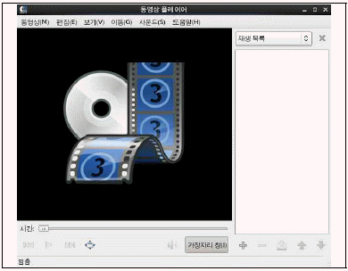
- ImageMagicK
- eog
- GIMP
- Totem
(정답률: 66%)
53. 다음 중 X 윈도 실행 시에 생성되는 관련 키 값의 저장 경로로 알맞은 것은?
- $HOME/xauthority
- $HOME/Xauthority
- $HOME/.xauthority
- $HOME/.Xauthority
(정답률: 55%)
54. 다음 그림에 해당하는 프로그램으로 알맞은 것은?
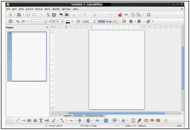
- LibreOffice Writer
- LibreOffice Impress
- LibreOffice Calc
- LibreOffice Draw
(정답률: 47%)
55. 다음 중 이미지 뷰어 프로그램으로 알맞은 것은?
- eog
- Totem
- KMid
- Rhythmbox
(정답률: 79%)
56. 다음중 디스플레이매니저에대한 설명으로틀린것은?
- 런 레벨 3에서 부팅과 동시에 실행된다.
- 사용자 이름과 암호를 요청하고 유효한 값이 입력되면 세션을 시작한다.
- GNOME에서는 GDM을 사용한다.
- KDE에서는 KDM을 사용한다.
(정답률: 66%)
57. 다음 중 CentOS 6 버전에서 X 윈도 기반으로 네트워크 주소를 설정할 때 사용하는 명령으로 알맞은 것은?
- netconf
- netconfig
- system-config-network
- nm-connection-editor
(정답률: 41%)
58. 다음 중 OSI 7계층 모델에서 데이터링크 계층의 데이터 전송 단위로 알맞은 것은?
- bit
- frame
- packet
- segment
(정답률: 75%)
59. 다음 설명에 해당하는 파일로 알맞은 것은?
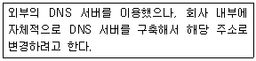
- /etc/sysconfig/network
- /etc/hosts
- /etc/host.conf
- /etc/resolv.conf
(정답률: 56%)
60. 다음 중 192.168.0.1/25가 의미하는 서브넷마스크값으로 알맞은 것은?
- 255.255.0.0
- 255.255.255.0
- 255.255.255.128
- 255.255.255.192
(정답률: 67%)
61. 다음 중 로컬 시스템에 사용 중인 네트워크 카드의 맥(MAC) 주소를 확인할 때 사용하는 명령으로 알맞은 것은?
- ip
- ss
- route
- arp
(정답률: 38%)
62. 다음 중 시스템간의 파일을 공유하는 서비스로 거리가 먼 것은?
- IRC
- NFS
- FTP
- SAMBA
(정답률: 67%)
63. 다음 중 원격지에 있는 시스템과의 프린터 공유를 위해 필요한 서비스로 알맞은 것은?
- SSH
- NFS
- 텔넷
- SAMBA
(정답률: 59%)
64. 다음 중 텔넷 명령을 이용해서 로컬시스템의 웹 서버 동작을 확인할 때의 명령으로 알맞은 것은?
- telnet localhost
- telnet -p 80 localhost
- telnet localhost:80
- telnet localhost 80
(정답률: 57%)
65. 다음 ( 괄호 ) 안에 들어갈 내용으로 알맞은 것은?
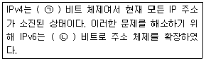
- ㉠ 32 ㉡ 64
- ㉠ 32 ㉡ 128
- ㉠ 64 ㉡ 128
- ㉠ 64 ㉡ 256
(정답률: 70%)
66. 다음 중 루프백(Loopback) 네트워크가 속해 있는 IPv4의 클래스로 알맞은 것은?
- A 클래스
- B 클래스
- C 클래스
- D 클래스
(정답률: 58%)
67. 다음 설명에 해당하는 LAN 구성 방식으로 알맞은 것은?
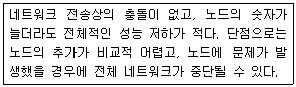
- 스타형
- 버스형
- 링형
- 망형
(정답률: 61%)
68. 다음 중 'Sliding Window'와 관련 있는 프로토콜의 기능으로 알맞은 것은?
- 순서지정
- 흐름제어
- 오류제어
- 연결제어
(정답률: 78%)
69. 다음 중 C 클래스 기준으로 서브넷마스크를 255.255.255.192로 설정했을 때 하나의 서브네트워크에서 호스트에 할당할 수 있는 IP 주소 개수로 알맞은 것은?
- 62
- 64
- 126
- 128
(정답률: 58%)
70. 다음 중 시스템에 설정된 게이트웨이 주소를 확인할 때 사용하는 명령으로 알맞은 것은?
- ifconfig
- ss
- route
- arp
(정답률: 45%)
71. 다음 중 사용자가 메일 서버를 통해 메일을 보내는 것과 관련 있는 프로토콜로 알맞은 것은?
- POP3
- IMAP
- SMTP
- SNMP
(정답률: 70%)
72. 다음 중 리눅스와 리눅스 시스템간의 디렉터리 공유할 때 가장 효율적인 서비스로 알맞은 것은?
- SSH
- NFS
- FTP
- SAMBA
(정답률: 65%)
73. 다음 설명에 해당하는 파일로 알맞은 것은?
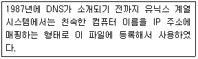
- /etc/domaintable
- /etc/access
- /etc/local-host-names
- /etc/hosts
(정답률: 64%)
74. 다음 중 IPv6에 대한 설명으로 틀린 것은?
- 패킷 크기의 확장
- IP 주소 대역 구분인 클래스의 확장
- 헤더 구조의 단순화
- 흐름 제어 기능 지원
(정답률: 56%)
75. 다음 설명에 해당하는 프로토콜로 알맞은 것은?
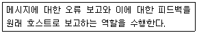
- IP
- UDP
- ARP
- ICMP
(정답률: 75%)
76. 다음 그림에 해당하는 파일로 알맞은 것은?
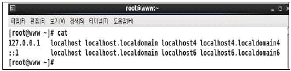
- /etc/sysconfig/network
- /etc/hosts
- /etc/host.conf
- /etc/resolv.conf
(정답률: 49%)
77. 다음 설명에 해당하는 것으로 알맞은 것은?
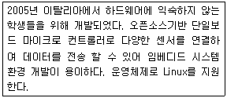
- 라즈베리파이
- 안드로이드
- 아두이노
- 심비안
(정답률: 69%)
78. 다음 설명에 해당하는 시스템으로 알맞은 것은?
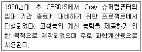
- 고가용성 클러스터
- 베어울프 클러스터
- 부하분산 클러스터
- 가상서버 클러스터
(정답률: 63%)
79. 다음 설명과 관련 있는 기술로 알맞은 것은?
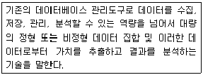
- 클러스터
- 임베디드
- 클라우드 컴퓨팅
- 빅데이터
(정답률: 82%)
80. 다음 중 리눅스 동향으로 가장 알맞은 것은?
- 서버 분야에서 다른 운영체제에 비해 약세를 보이고 있다.
- 클라우드 컴퓨팅, 빅데이터, 사물인터넷 환경 등에서 중추적인 역할이 기대된다.
- 최근 사용자 편의성을 높인 배포판들의 등장으로 데스크톱 분야 점유율이 가장 높아졌다.
- 리눅스 운영체제 특성상 슈퍼컴퓨팅 분야는 적합하지 않아 점유율은 좋지 않다.
(정답률: 69%)